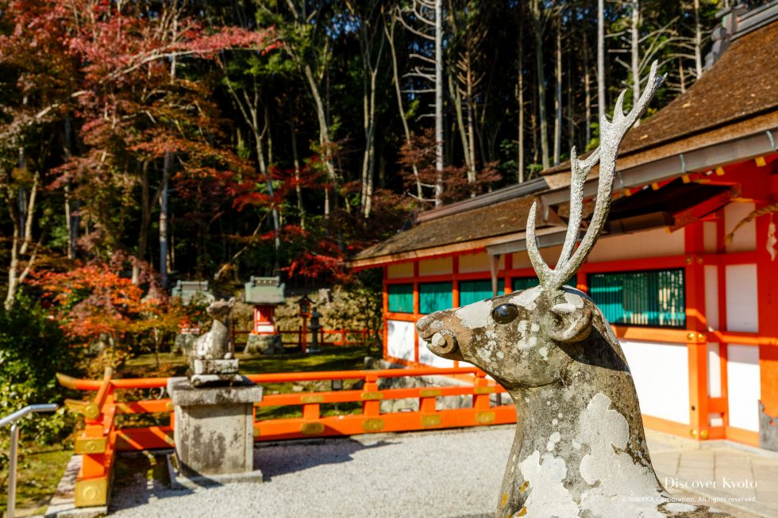
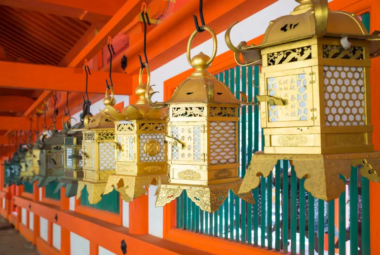
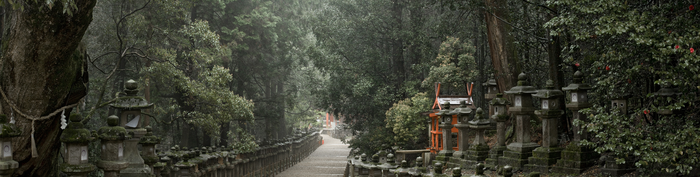

Kasuga Taisha was built in 768 by a lord of the powerful Fujiwara clan. Whereas it is quite common for Japanese shrines to honor one or two gods, the influence of the Fujiwaras allowed Kasuga Taisha to host four of them, including ones from Chiba, Ibaraki and Osaka. Each has its own shrine
Another popular spot in the shrine grounds is the Shinen Manyo Botanical Garden, which has over 200 kinds of plants. The wisteria flowers that bloom from late April to early May are a particular favorite of visitors.
One of the first things people notice when they enter Kasuga Taisha is its thousands of stone lanterns—over 3,000 of them, in fact. The path to the main building is flanked on both sides by these lanterns, and the main building has hundreds of bronze lanterns as well.
 Scaling Mt. Fuji at night will allow you to reach the summit at dawn to experience goraiko, or worshipping of the sun. It's a befitting description as climbing Japan's most sacred and culturally significant mountain is an unforgettable encounter.
